About us
ECOES JV (Eco Engineering Systems JV) is a joint venture between ECOES Ltd. (UIC 17513699), London, UK, BULFIRE ECOES Ltd. (UIC 201474277), and BULFIRE Ltd. (UIC 121438234), Sofia, Bulgaria (EU). The three companies have combined their manufacturing and commercial capabilities for the design, production, and sale of firefighting equipment, mobile and stationary charging stations, and other specialized machinery and equipment.
The founder, CEO, and sole owner of the two companies participating in the ECOES JV (ECOES Ltd., London, UK, and BULFIRE Ltd., Sofia, Bulgaria, EU) is Dr. Eng. Atanas Gouchev.

Dr. Eng. Atanas Gouchev has 45 years of experience in the automotive industry, comprising 15 years in public administration and 30 years in the private sector.
He holds two Master’s degrees in engineering and a doctorate:
- Master of Engineering in Internal Combustion Engines,
- Master of Engineering in the Repair and Operation of Automotive and Tractor Machinery,
- PhD in the Environmental Aspects of Automotive Engines.
Throughout these 45 years, Dr. Eng. Atanas Gouchev has been involved in the creation and management of complex engineering projects related to the manufacturing and transformation of specialized mobile machinery.
History
BULFIRE Ltd. was registered in 1997 with the object of activity design, production, and service of trucks with special purposes – fire, emergency rescue, airport, communal, agricultural, lifting, and other special vehicles.

In 2002, BULFIRE Ltd. introduced ISO 9001, ISO 14001, and ISO 18001 (OHSAS) quality management systems for the design, manufacture, and service of special-purpose trucks, for which the company is certified by SGS London.

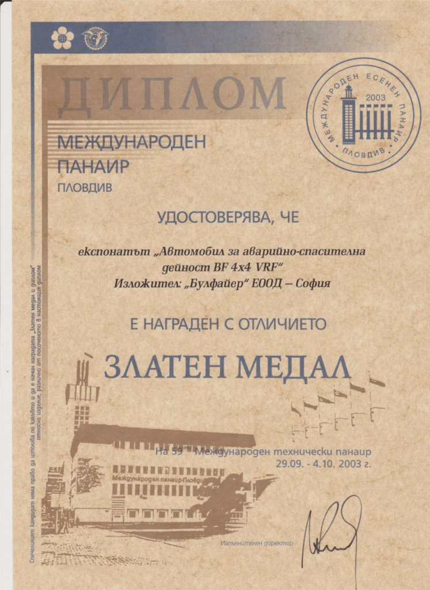
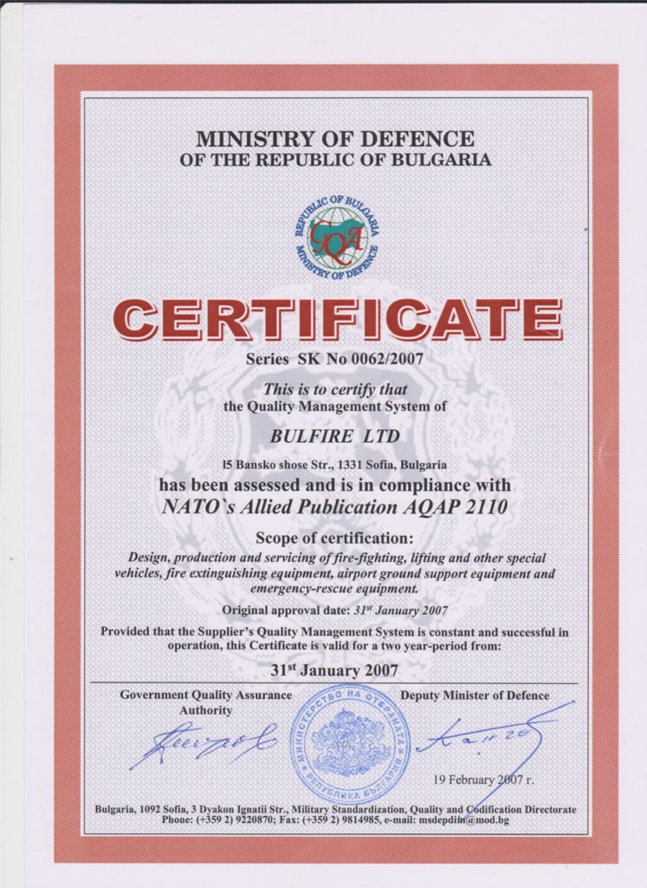
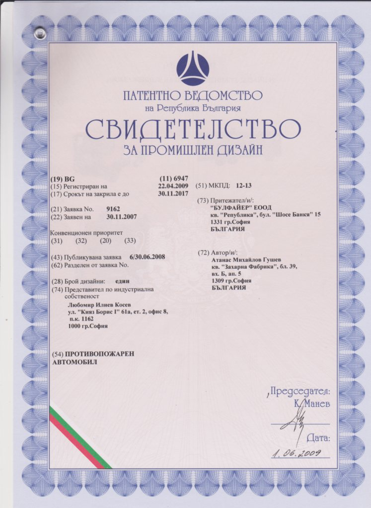
In the following years, BULFIRE Ltd. designed and manufactured a large number of special purpose vehicles for Bulgaria and for export to other countries, as customers of BULFIRE Ltd. are the major and responsible state and private structures, such as the Ministry of Defense, the Ministry of the Interior, the Ministry of Transport, the Ministry of Energy, the State Agency "Civil Protection", all airports in Bulgaria, Lukoil Neftohim Burgas, TPP "Maritsa Iztok", Kozloduy Nuclear Power Plant, and many others.
Below is a short Gallery of some of the special-purpose vehicles designed and manufactured by BULFIRE Ltd.
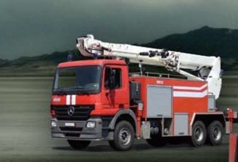
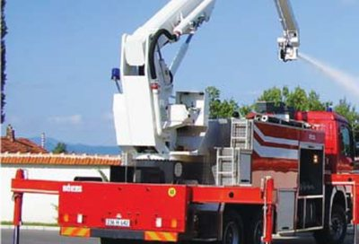
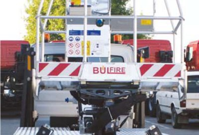

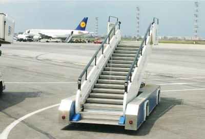


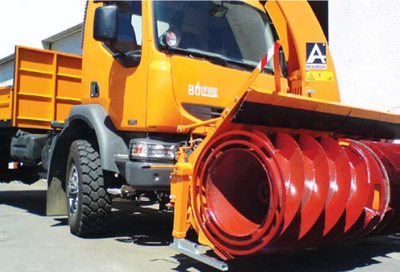
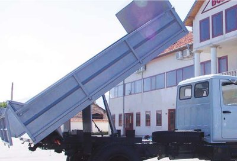


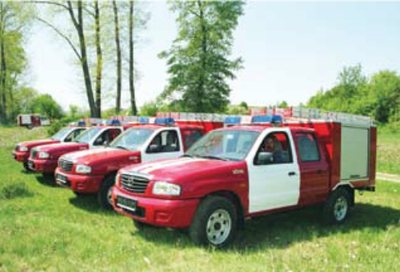
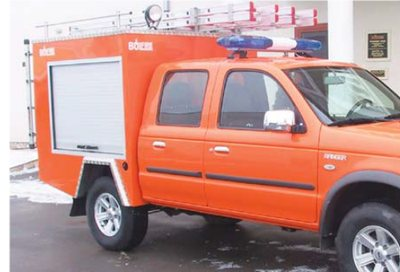


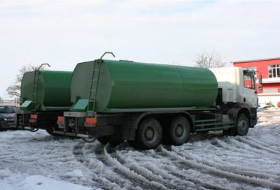

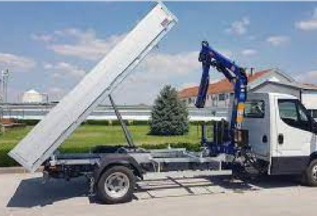
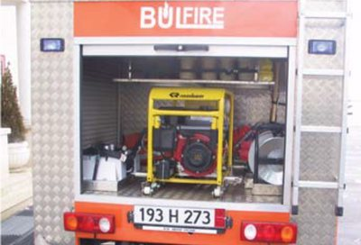
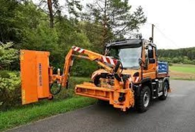


In 2024, BULFIRE Ltd. redirected its production potential to produce and export off-road fire-fighting vehicles, tractors and trailers, agro, and other special trucks for work in severe off-road conditions. This production activity for export BULFIRE Ltd. has been assigned to its related company BULFIRE Technics Ltd. BULFIRE Ltd. carries out the design, homologation, certification activities, and control of the production activity carried out by BULFIRE Technics Ltd.
Off-road trucks, tractors, and trailers produced by BULFIRE Technics Ltd. are intended for dealers of fire-fighting equipment, and commercial companies participating in public procurement in different countries. It is also possible to sell to end customers, but the preferred way of working is through dealers of fire-fighting equipment.
Dealers: Companies or private individuals who wish to be dealers of BULFIRE Technics Ltd. must have knowledge and experience in selling at least one of the following areas – fire-fighting, other special trucks, or agricultural machinery.